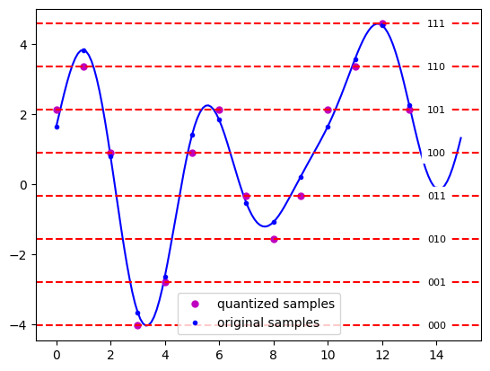
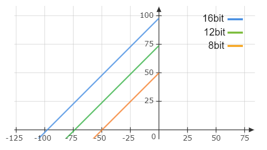

קוונטיזציה#
אמ;לק
נעבור עכשיו לשלב השני של תהליך הדיגיטציה, הקוונטיזציה.
יש לנו כבר אוסף של דגימות \(V_{n}\) ואנחנו רוצים לשמור אותן במחשב. למה לא פשוט לשמור את הערך עצמו? הסיבה היא שזה ערך רציף וכל מספר שאנחנו שומרים במחשב צריך להיות סופי. אנחנו רוצים גם להשתמש בכל “טווח” הערכים בזיכרון שלנו.
נניח שהאות שלנו מתנדנד בין -1 וולט ל1. כלומר \(V_{n}\in\left[-1,1\right]\). אבל אנחנו שומרים את המספרים בפורמט של int8 (לדוגמא). המספר הכי גדול שאנחנו יכולים לייצג הוא 127 בעוד המספר הכי קטן הוא -128
נרצה להצמיד לערך 1 וולט את המספר 127 ולערך מינוס 1 וולט את -127 או משהו בסגנון.
קוונטיזציה לינארית#
זה השיטה הנפוצה ביותר והיא עושה בדיוק מה שאמרנו לפני רגע. נחלק את התחום \(\left[V_{min},V_{max}\right]\) ל-\(2^{N_{bits}}\) רמות שוות מרווחים.
המספר \(N_{bits}\) נקרא עומק הקוונטיזציה
גודל כל מדרגה יהיה \(\Delta=\frac{V_{max}-V_{min}}{2^{N_{bits}}}\)
למה שלא ניקח עומק דגימה מאוד גדול?
זה קשה לעצב מקלט עם רגישות מאוד גדולה
לפעמים יהיו לנו מקורות הרבה יותר משמעותיים לאי דיוקים
זה תופס יותר זיכרון (כמובן)
בכמה זיכרון בדיוק אנחנו משתמשים? (נניח לרגע שאנחנו לא דוחסים) אנחנו עושים \(f_{s}\) דגימות בשנייה וכל אחת היא \(N_{bits}\) ביטים. כלומר:
איך נראית קוונטיזציה?

קביעת עומק הקוונטיזציה#
נרצה למדל את גודל השגיאות שלנו בתהליך הקוונטיזציה. הזכרנו כבר את גודל המדרגות \(\Delta=LSB\) שמייצג את גודל השינויי מההפיכה של הביט הכי פחות משמעותי (LSB)
בכמה אנחנו יכולים לטעות? אם נסמן את האות אחרי הקוונטיזציה ב-\(V_{q}\left[n\right]\) ut ואת האות לפני ב-\(V\left[n\right]\) נוכל לרשום:
כמובן שנוכל לרשום את האות שקיבלנו בצורה הבאה:
זה אומר שהאות שקיבלנו הוא האות המקורי ועוד סיגנל של שגיאה. .השגיאה הזו כיביכול אקראית ולכן נקרא לה רעש הקוונטיזציה
אבל כיצד נדע כמה חזק אנחנו מוכנים שיהיה רעש הקוונטיזציה?
המדד הס=בסיסי (והחשוב ביותר) שמשתמשים בו הוא SNR (Signal to Noise Ratio) או במילים אחרות כמה חזק האות חלקי כמה חזק הרעש. חזק אנחנו מודדים באנרגיה לשנייה או במילים אחרות בהספק. ולכן נרשום:
כמה דגשים:
לרוב נמדוד הספק ממוצע ולא הספק רגעי ככה ש-SNR יהיה מספר בודד
SNR הוא חסר יחידות ולכן שימושי מאוד
לרוב נהוג למדוד SNR ב-dB \(SNR_{dB}\equiv10\log_{10}\frac{P_{signal}}{P_{noise}}\)
נחשב את ה-SNR בין הסיגנל לרעש הקוונטיזציה:
נסתכל על הביטוי התחתון. ממש מתחשק להתחיל להניח כל מיני הנחות על איך הוא מתפלג (נניח אחיד) אבל האמת שזה לא מאוד משנה. אם נסכום לאורך מספיק דגימות נוכל להשתמש במשפט הגבול המרכזי. לפי המשפט הזה הממוצע של \(N\) משתנים מקריים (במקרה שלנו \(\left(e\left[n\right]\right)^{2}\)) עבור \(N\) מספיק גדול מתפלג נורמלית עם ממוצע זהה לזה של משתנה יחיד וסטיית תקן הקטנה בפקטור של \(\sqrt{N}\) לצורך הדיון שלנו זה לא מאוד מעניין כי משנה לנו רק הממוצע.
נקבל כי:
כן כן הנחנו אי תלות בין שגיאות עוקבות אבל זו הנחה יחסית סבירה. ואם הן תלויות אז ניתן אפילו להקטין את הרעש ככה שאנחנו מחמירים.
עכשיו נוכל לקחת לדוגמא את המצב בו \(e\left[n\right]\sim U\left[-\frac{\Delta}{2},\frac{\Delta}{2}\right]\) (כלומר אחיד על הקטע \(\left[-\frac{\Delta}{2},\frac{\Delta}{2}\right]\))
נקבל כי \(\mathbb{E}\left[e\left[n\right]\right]=0,\mathbb{V}\left[e\left[n\right]\right]=\frac{\Delta^{2}}{12}\) ולכן
משהו מעודד הוא שאנחנו יכולים גם לקבל חסם עליון. הכי גרוע יהיה אם השגיאה תמיד אחד משני הערכים \(\pm\frac{\Delta}{2}\) במצב כזה נקבל:
ברור שהסיפור עבור האות יהיה זהה לחלוטין אבל אם לוקחים אות פשוט אפשר גם לחשב ישירות:
כלומר קיבלנו כי:
או ביחידות יותר מוצלחות:
נזכור כי:
המעבר האחרון הוא כי הרבה פעמים צריך לבחור את \(A_{max},A_{min}\) מראש או אחרי קצת דגימות לרוב אותות הם סימטרים סביב 0 (חסרי DC) ולכן נבחר \(A_{max}=A_{min}\)
ולכן:
כמה מסקנות חשובות:
כל ביט נוסף שנוסיף לעומק הקוונטיזציה יתן לנו 6bB זה ממש טוב
אנחנו נענשים אם אנחנו לא מנצלים את כל הטווח הדינמי. על כל סדר גודל אנחנו נענשים ב20dB
אנחנו מתחילים ממספר חיובי שמגיע מכלל הפקטורים של ההתפלגות של הרעש. במקרה שלנו 1.76dB
אם היינו לוקחים את המקרה הממש מחמיר שלנו (\(\mathbb{E}\left[\left(e\left[n\right]\right)^{2}\right]=\frac{\Delta^{2}}{4}\)) האיבר הזה יקטן ל-3.01- לא זניח אבל לא נורא
נסרטט את רעש הקוונטיזציה בצורה גרפית

למה זה חשוב? נניח שאנחנו קולטים שני אותות במקביל על אותו תחום תדר. אין לנו ברירה אלא לקבוע את \(A_{max}\) לפי החזק מבינהם. מה שיקרה אחרת זה שנגיע למה שנקרא דחיסה של המקלט. כל עוצמה מעל \(A_{max}\) שנבחר תמיד תקבל פשוט את הערך \(A_{max}\). במקרה כזה נוכל לשאול את עצמנו האם יש לנו סיכוי לקלוט גם את האות החלש? נניח שהאות החלש חלש ב7 סדרי גודל (בהספק) נקבל כי עבור האות החלש \(20\log_{10}\left(\frac{A_{max}}{A}\right)=10\log_{10}\left(\frac{P_{strong}}{P_{weak}}\right)=70\) נקבל שבמקלט של 8bit ה-$\(SNR_{dB} עבור האות הזה יהיה \)-22\(. אין סיכוי לקלוט ככה אות במקלט של ה-12bit נקבל \)SNR\approx3\(. זה קשה אבל אפשרי לקלוט. כנראה נצטרך תיקון שגיאות ממש טוב. אבל עבור ה-16bit נקבל \)SNR\approx28$ וזה כבר לא מזיז לנו אפילו לא קצת.
רוצים מקרה אמיתי? נניח שאתם מנסים לקלוט GPS. בGPS יש טריק של להרוויח עוד 43dB אחרי הקליטה אבל זה בהנחה שהרעש לא קורלטיבי לאות מה שלא נכון אם יש רעש קוונטיזציה חזק. נניח לרגע את זה בצד. האות לש GPS מגיע לקרקע ב-125dBm. אם מישהו רוצה פשוט לדחוס אותנו ונניח שיש לנו מקלט 8bit הוא יכול לשדר ככה שאנחנו נקלוט אותו ב–77dBm. נניח לרגע מודל אידאלי של ריק שבו הדאיכה של גל אלקטרומגנטי היא ריבועית במרחק (הדאיכה של האנרגיה, השדה דועך כמו \(\frac{1}{r}\)). נשתמש בנוסחה שתלמדו עליה בקורס הבא:
זה אומר שנניח שהמרחק הוא 10KM עבור GPS אורך הגל הוא \(\lambda=\frac{c}{f}=\frac{3\cdot10^{8}}{1575.42\cdot10^{6}}=1.9\cdot10^{-1}=19cm\)
נקבל:
טוב זה ממש רע, אבל יוצא לנו שהוא צריך לשדר בעוצמה של \(27dBm\) שזה \(-3dB\) כלומר צריך עוצמת שידור של חצי וואט. שזה ממש משהו שאפשר להרכיב בבית :)
דיסקליימר: אל תנסו את זה בבית, זה לא חוקי. בנוסף זה GPS היא מערכת מורכבת ויש אינסוף פרטים שצריך לדעת. בקיצור אל תנסו את זה בבית
עוד דיסקליימר הוא שהרבה לפני שנדחוס את המקלט אנחנו נפריע לאות להיקלט למה בכל זאת יש יתרון בשיטה הזו? היתרון הוא שאנחנו יכולים לנצל את כל האנרגיה שיש לנו כדי לשדר על תדר בודד (הוא אפילו לא חייב להיות ברוחב פס של האות אלא רק בתחום של הפילטר). כל עוד מנסים לסנן אותות כאלו באופן דיגיטלי ולא אנלוגי זה יהיה כבר מאוחר מידי. כלומר שאנחנו יכולים לדחוס מקלט בכל תחום שהוא לא מסנן, ואם לדוגמה יש אות מדלג והמקלט מקשיב לכל טווח הדילוג ומפלטר דיגיטלית אז אנחנו נצליח לדחוס אותו.
נשים לב שרעש הקוונטיזציה לא רק מגביל אותנו בין אותות שונים אלא גם באותו אות עצמו. יש לנו משרעת של ערכים שאנחנו יכולים להיות רגישים בה
התחום הדינמי - \(DR_{dB}=10\log_{10}\left(\frac{P_{max}}{P_{min}}\right)\) כלומר היחס בין העוצמה הכי חזקה להכי חלשה שאנחנו רגישים אליה
נעבור להדגמה